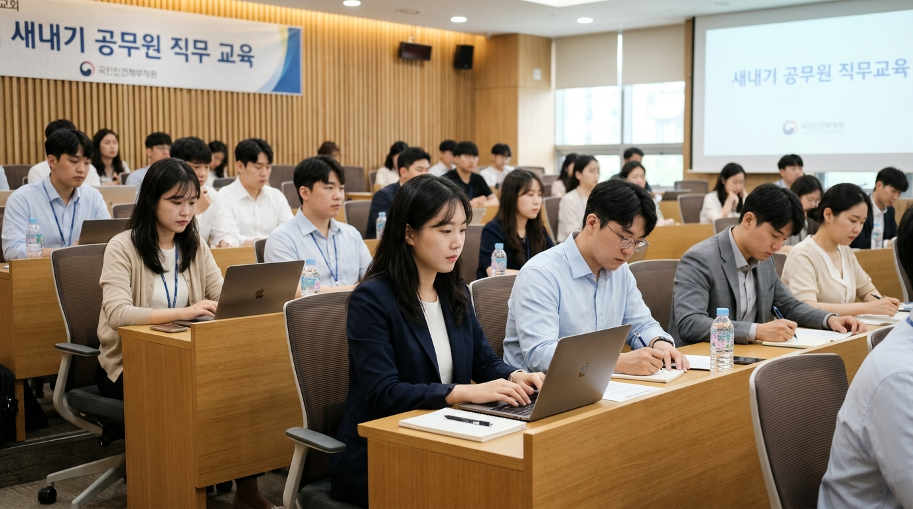
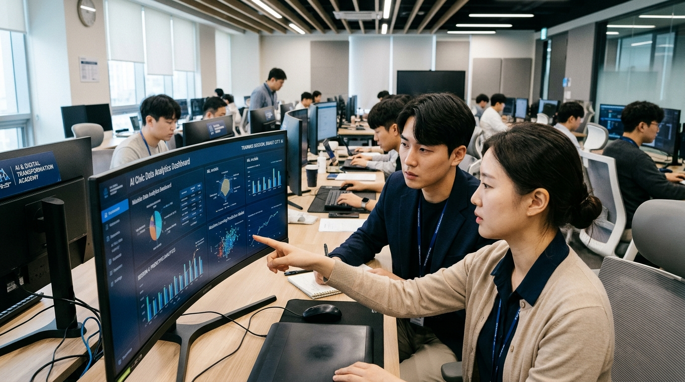

국가공무원인재개발원은 공직사회의 경쟁력을 견인하고, 디지털·AI 대전환 시대를 선도하는 창의적이고 유능한 공직자를 육성합니다.
공직자 온·오프라인 교육
미래 행정 혁신 인재 육성
외국 공무원 연수 및 HRD 수출
인사혁신처 산하 기관으로서 대한민국 공무원의 기본 소양과 직무 전문성을 총괄하는 중앙 HRD 중추기관입니다.
"국민과 함께 미래를 여는 신뢰받는 공직인재 양성"
국민의 기대에 부응하는 따뜻하고 신뢰받는 정부를 구현하기 위해 공직자로서 갖추어야 할 최우선 덕목을 함양합니다.
충북 진천 본원과 경기 과천 분원을 운영하여 전국 단위의 맞춤형 공직자 교육 및 글로벌 연수를 안정적으로 지원합니다.
국가공무원인재개발원이 수행하는 4대 중점 교육 및 연구 영역입니다.
공직에 입문하는 5급·7급·9급 공개채용 합격자의 올바른 공직자세와 기본 직무수행 역량을 집중 함양합니다.
변화하는 정책환경에 대응하여 국가 정책을 이끌어 갈 핵심 중간관리자 및 고위공무원의 전략적 리더십을 강화합니다.
AI, 생성형 기술, 빅데이터 등 최신 기술을 국정에 접목하고, 국가인재망 '나라배움터' 플랫폼을 통한 상시학습을 제공합니다.
외국 공무원 교육연수를 통해 한국의 우수한 행정 노하우를 전수하고 글로벌 HRD 연구 네트워크를 운영합니다.
공직 생애주기별 성장 경로에 따른 체계적인 교육 프로그램을 제공합니다.
공무원으로서의 첫걸음을 떼는 신규 임용자가 국가와 국민을 위한 투철한 사명감과 당당한 공직관을 확립할 수 있도록 실습 및 참여형 위주로 운영됩니다.
국민에게 헌신하고 미래 공공행정을 선도할 신임 공직자들의 생생한 학습과 토론, 디지털 실습 현장입니다.

기본직무·공직가치 교육신규 임용 후보자들이 노트북과 교재를 활용해 국정 철학, 반부패 청렴 윤리, 정책 보고서 작성법을 경청하며 올바른 공직관을 확립하고 있습니다.
다양한 부처의 동기들과 팀을 이루어 실제 민생 현안을 주제로 열띤 정책 토론과 아이디어 브레인스토밍을 진행하며 협업 역량을 키워갑니다.

공공 AX · AI 빅데이터 실습행정 공공데이터 분석 및 생성형 AI 도구 활용 실습을 통해 미래 행정 혁신을 주도할 스마트 공직자로 거듭나고 있습니다.
외부 연결 장애 없이 브라우저에서 바로 시청할 수 있는 신임 공직자들의 실제 교육 및 실습 영상입니다.
신규 임용 후보자들이 진천 본원 대강의실에서 공직 윤리, 헌법적 가치, 정책 보고서 실무 작성을 경청하며 열정적으로 필기하는 현장 영상입니다.
최신 스마트 컴퓨터 랩에서 대민 행정 데이터 분석 및 생성형 AI 도구를 정책 기획에 접목하며 실무 역량을 강화하는 생생한 실습 모습입니다.
다양한 행정 직렬의 동기들이 조별 토론을 통해 국민 체감형 정책 아이디어를 도출하고 협업과 소통 능력을 키우는 세미나 현장입니다.
국가공무원인재개발원은 충북 진천 본원과 경기 과천 분원 두 곳에 캠퍼스를 두고 있습니다.
우편번호: 27873 | 대표전화: 043-931-6000 | 팩스: 043-931-6099
서울 남부터미널/동서울터미널 ➔ 충북혁신도시 터미널 하차 (약 1시간 20분 소요)
진천시외버스터미널 하차 ➔ 충북혁신도시 방면 시내버스 탑승 ➔ 국가공무원인재개발원 정류장 하차 (약 20분)
오송역 하차 ➔ 8번 출구 또는 택시/연계버스 승강장
교육생 및 방문자분들이 자주 궁금해하시는 내용입니다.
기본교육 과정(5급 신임관리자 및 7·9급 과정) 입교일 및 주말 귀가/복귀 시기에 맞춰 오송역(진천 본원행) 및 사당역/정부과천청사역(과천 분원행) 셔틀버스가 정기 운행됩니다. 구체적인 배차 시간표는 과정 개설 전 교육생 안내문(SMS 및 나라배움터)을 통해 공지됩니다.
진천 본원 생활관은 전 객실 1인 1실(또는 과정에 따라 2인 1실)로 운영되며, 침대, 책상, 샤워시설, Wi-Fi가 완비되어 있습니다. 편의시설로는 피트니스센터, 실내체육관, 북카페, 구내식당, 매점 및 산책로가 조성되어 있어 쾌적한 합숙 교육 환경을 제공합니다.
국가인재개발원의 주 교육대상은 공무원이지만, 온라인 교육 플랫폼인 '나라배움터(열린강좌)'를 통해 인문소양, 공직가치, 디지털 기초 등 일부 콘텐츠를 전 국민에게 무료 개방하고 있습니다. 또한 정원 및 산책로는 주말 동안 지역 주민에게 개방됩니다.
국가보안시설로서 정문 경비실(방문안내실)에서 신분증 제시 후 방문증을 교부받으셔야 출입이 가능합니다. 주차요금은 무료이며 방문 목적에 따라 지정된 주차구역을 이용하시면 됩니다.
교육 과정 상담, 시설 견학 및 연수 문의사항이 있으시면 언제든지 연락해 주십시오.